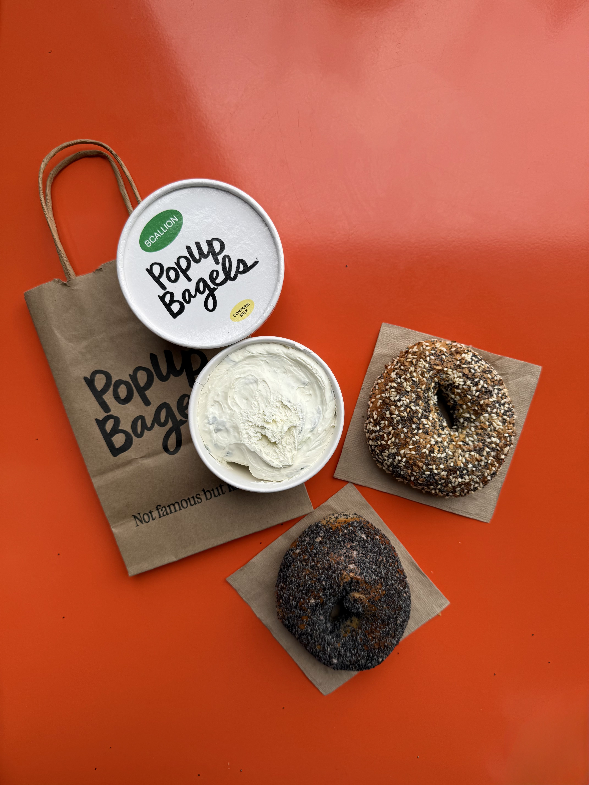
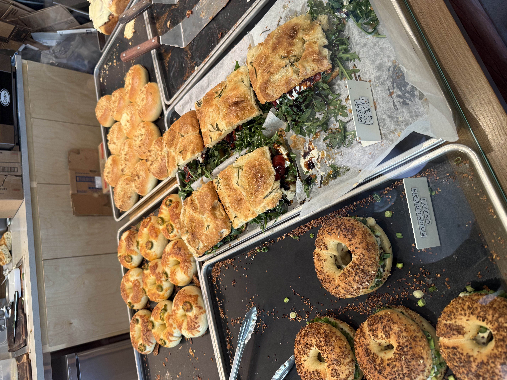
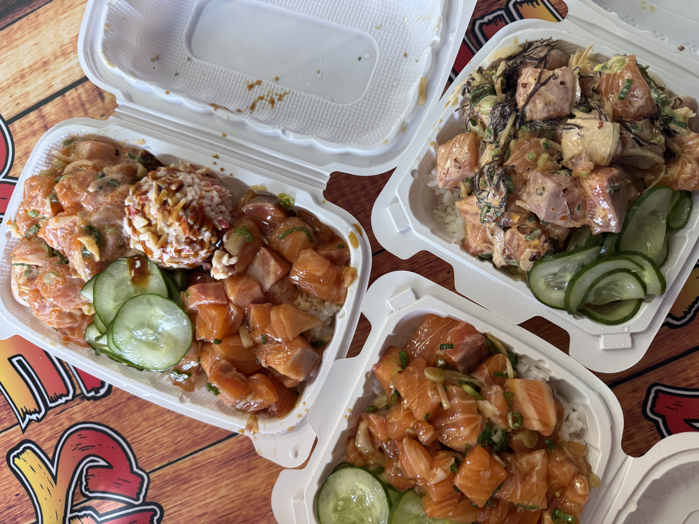
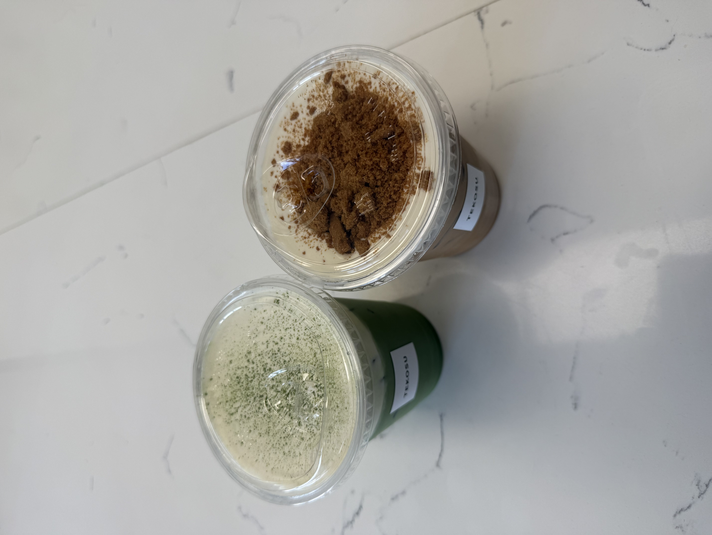
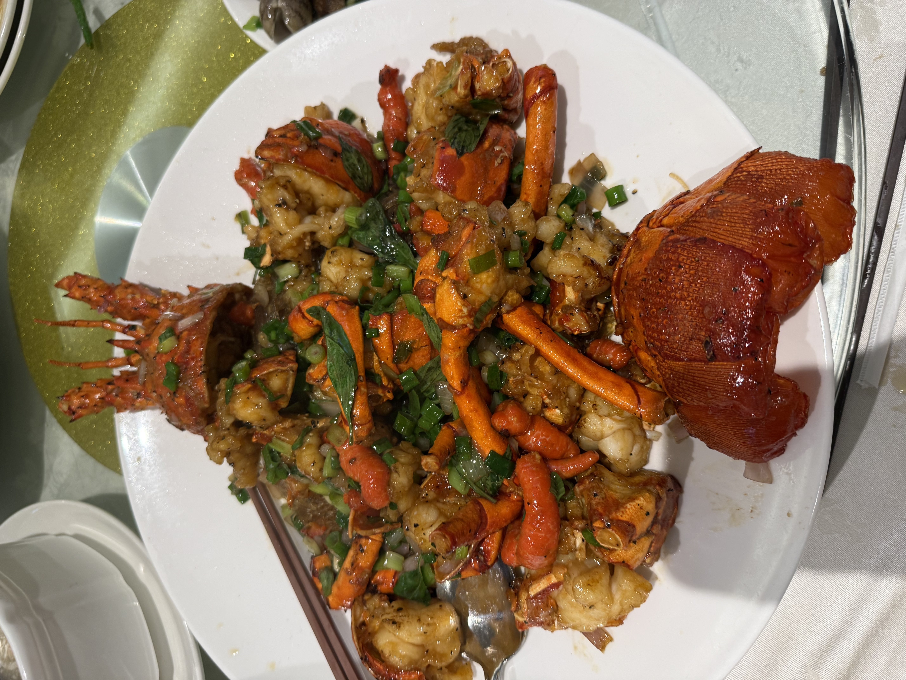
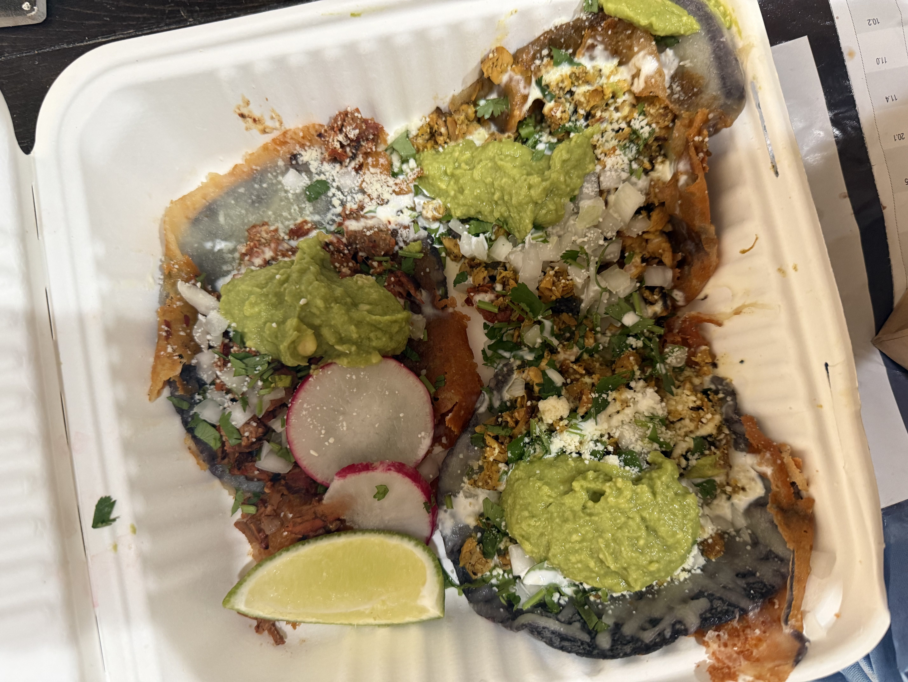
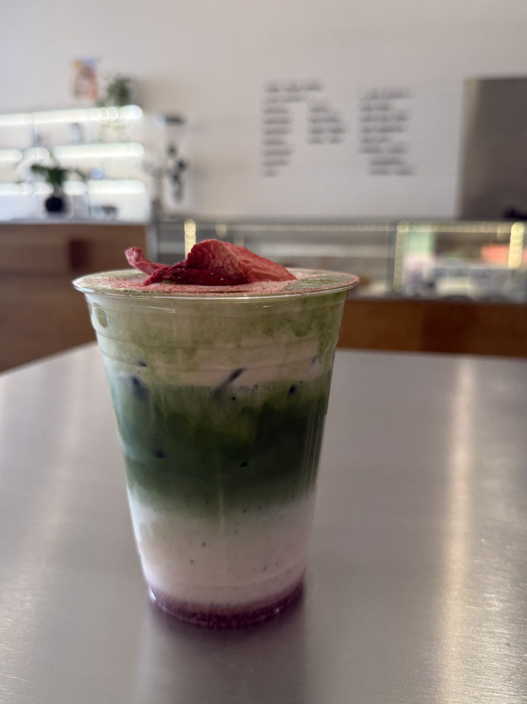
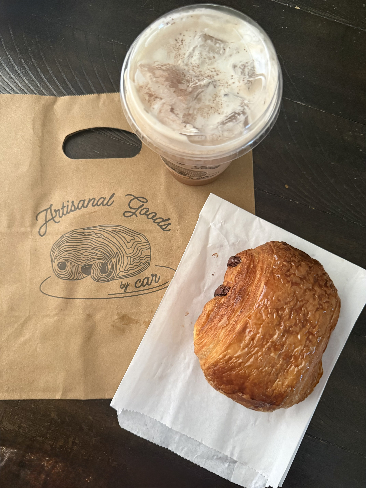
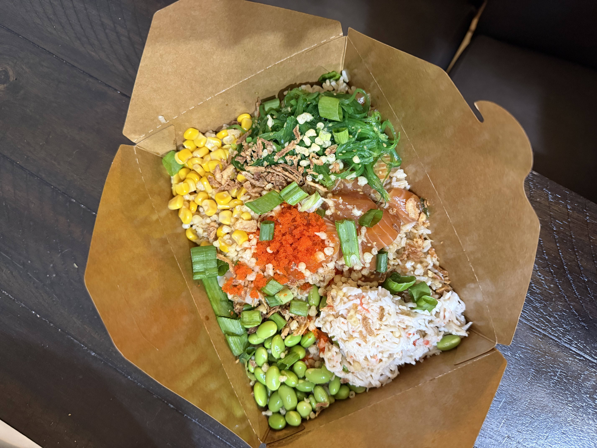
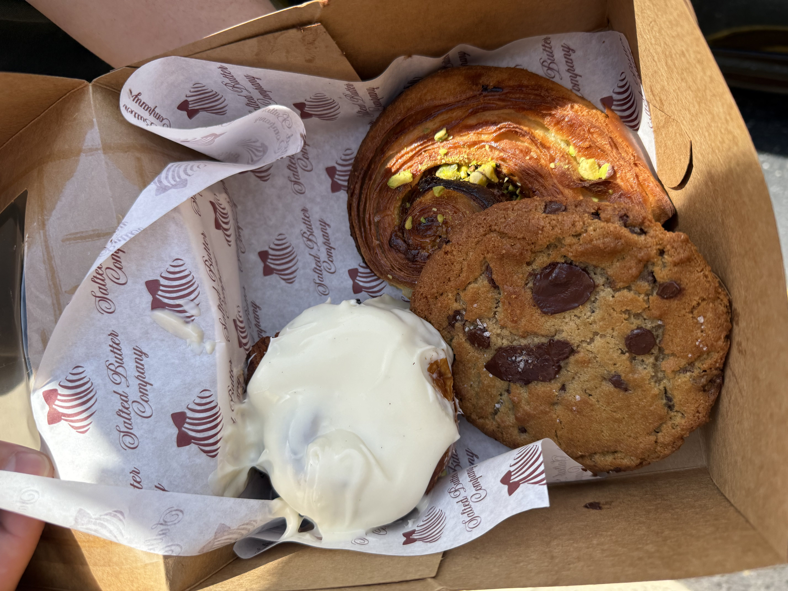

ABOUT
Hi! I'm Karena, a data science and business administration student at Chapman University who enjoys combining analytical thinking with creativity. I'm especially interested in building websites and apps that can positively impact everyday life. Outside of coding and school, I'm also a Yelp Elite food reviewer, so I love exploring new places, writing reviews, and taking food pictures!

Beyond the Code...
Outside of tech, I'm a Yelp Elite aka a food reviewer who loves exploring new restaurants/cafes, writing reviews, and taking pictures of food! It's one of the ways I express creativity outside of coding, and it has helped me grow my eye for detail, storytelling, and user experience in everyday life.









